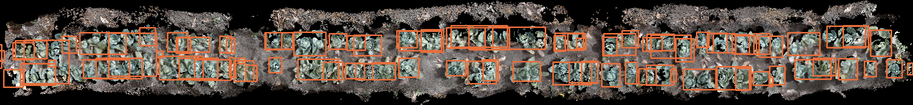

The goal is a single command that takes the name of a crop, finds the three videos the robot recorded for it, and returns an interactive 3D field with one bounding box around every plant. You type cabbage, and a few minutes later a browser page opens that you can orbit, zoom and inspect, each box carrying the plant's position, its size, and how many frames it was seen in.
Everything below runs locally on an Apple M4 with 16 GB of shared memory and no NVIDIA GPU. That is not an aside — it is the constraint behind most of the library choices, and behind the decision to reconstruct one camera properly rather than three badly.
Why there is no stereo to use
Three cameras sounds like a rig you can triangulate from. It isn't. Two sit at ground level inside the canopy pointing roughly opposite ways, and the third looks straight down at the bed — so a cabbage seen from the side and the same cabbage seen from directly above share almost no matchable features. The usual multi-view approach, fusing several simultaneous views of one instant, has nothing to work with.
Depth comes from motion instead. The robot drives, so each camera on its own is a monocular sequence with real temporal baseline, which is enough to recover geometry. The overhead camera is reconstructed first, because it is the one that sees the field as a field.
Libraries, and what each was chosen over
- VGGTTakes a set of images and returns camera poses, depth maps and 3D point maps in one forward pass. Chosen over DUSt3R and MASt3R, which compare images pairwise and then need a separate global alignment step to stitch those pairs together — VGGT solves a whole window jointly, so that stage disappears.
- PyTorchRuns VGGT through Apple's Metal backend to reach the M4's GPU. Chosen over MLX, which is faster on Apple silicon but has no VGGT implementation. The VLM track does use MLX, so the two live in separate environments.
- YOLOEFinds crops from a text prompt such as "cabbage head", and returns a mask rather than a rectangle. Chosen over stock YOLO, whose fixed 80-class list contains broccoli but neither cabbage nor peppers.
- Open3DPlane fitting, voxel downsampling, outlier removal, clustering. Chosen over assembling trimesh, SciPy and scikit-learn, which cover the same ground less tidily — and it had a working Python 3.13 build, which several alternatives did not.
- PlotlyRenders the field as a single self-contained HTML file. Chosen over OpenGL and Open3D's own viewer, both of which require the software installed locally to see anything.
- OpenCVDecode, frame-to-frame motion, and the image processing behind keyframe choice and rig masking. Chosen over PyAV or imageio because the same library also provides the optical flow and morphology those stages depend on.
Pipeline
The caching is not housekeeping, it is what makes the thing usable: one stage takes a quarter of an hour and the rest take seconds.
Keyframes chosen by measured drift
The robot drives in bursts: long stationary stretches, then quick movement. Fixed-rate sampling is wrong in both directions — effort wasted where nothing new is visible, frames skipped where the view changes most. So keyframes are taken on measured image shift rather than on a clock, and the spacing turns out to be the single most consequential parameter in the pipeline. VGGT solves jointly across a window, so it needs heavy mutual co-visibility; past a certain drift the reconstruction stops being a soil plane with separable cabbage heads and becomes an undifferentiated curtain.
| Drift between keyframes | Ground-plane inliers | Trajectory straightness | Depth confidence |
|---|---|---|---|
| 2.5% of frame width | 46% | 9.7 | 3.1 |
| 5% | 31% | 5.2 | 1.1 |
| 10% | 32% | 4.6 | 1.0 |
Measured, not guessed. Window size was swept the same way — 16 frames beat both 8 and 24 — and keeping only the top fifth of points by confidence lifted plane inliers from 46% to 55%.
There is a trap on the other side of this, worth stating because it inverts the usual intuition: a parked camera produces a reconstruction that looks far cleaner than a moving one. With no baseline, VGGT falls back on its monocular depth prior — the output is plausible, not triangulated, and cannot be stitched to anything. That is why stationary stretches are dropped rather than sampled.
Masking the robot out of its own footage
The rig's rails, wheels and sibling cameras appear in every frame, and because they are bolted to the camera they never move relative to it. A reconstruction solver reads that as a stationary piece of world geometry while the field streams past, which corrupts the camera track. The fix exploits exactly the property that causes the problem: average hundreds of frames together and the field blurs into nothing while the hardware, identical in every frame, stays sharp enough to cut out.
Pose chaining, and the drift it accumulates
VGGT holds about sixteen frames at a time, so a long clip is processed in overlapping windows, each returning its own coordinate system. Frames shared between neighbouring windows supply the matching points to line them up, and chaining those alignments walks the whole clip into one frame of reference.
Every alignment carries a tiny rotation error, though, and composing thirty-five of them bends the entire field into an arc. The reconstruction cannot know the bed is flat — but we do. The flattening stage walks the row, measures where the soil actually sits, subtracts that profile, and replaces the arbitrary axes with the robot's real direction of travel. That last substitution is what finally separates the two planting rows.
Detection without a training set
Detection runs open-vocabulary, on text prompts like "cabbage head", for a blunt reason: stock YOLO's class list has no cabbage in it. YOLOE returns masks rather than rectangles, which matters more than it sounds — a rectangle drawn around a plant seen from directly above is mostly soil, and that soil would inflate the 3D box lifted from it.
Lifting reads the reconstructed depth underneath each mask and converts those pixels into a 3D blob. One plant appears in dozens of consecutive keyframes, so the blobs are clustered until each real plant has exactly one box. Per-frame recall is partial — roughly 60% of visible plants, with the misses concentrated in heavy occlusion — and clustering across many keyframes closes most of that gap.
The map

Five preset cameras switch between top-down, along the row, across the row, oblique and ground level. The last two are the ones worth dwelling on: the overhead camera never occupied those positions, so being able to look along the row from ground level is the reconstruction actually doing its job rather than replaying its input. Hovering a box reports the plant's identifier, its dimensions, and how many frames it was found in.
Those measurements are consistent with each other but carry no real-world units, because reconstruction from a single moving camera recovers shape without scale. One known distance — the overhead camera's height above the soil is the easiest — converts everything to centimetres. It is deliberately left as a one-line change rather than guessed at.
Runtime
- Reconstruction~26 s per 16-frame window on MPS
- Default run360 keyframes, about 15 minutes
- Whole clipWell over an hour
Limitations
- Every keyframe contributes its own depth estimate and the estimates are stacked rather than fused, so the soil surface comes out almost as thick as the plants are tall. Fusing them into a single surface is the most valuable outstanding improvement, and it would make every measurement taken from the map more trustworthy.
- Reconstruction quality is moderate. 640×480 footage, a low camera and a self-similar canopy all work against it — the same repeated-texture problem the NSF snap-bean work describes.
- Detection is open-vocabulary with no training, so per-frame recall sits near 60%; a model fine-tuned on hand-labelled frames would recover the occluded misses.
- Measurements are unitless until a single real-world distance is supplied.
- Registering the two ground-level cameras into the same coordinate frame is not built yet. The plan exploits the rigid rig: all three trajectories are one curve up to a fixed transform, solvable without any visual overlap — and the side profiles are exactly where a plant's height and shape live.